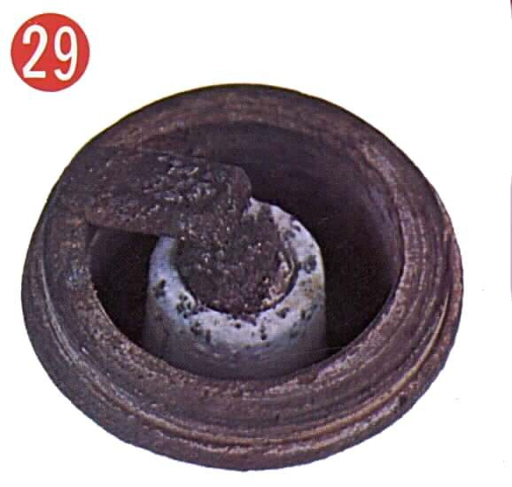
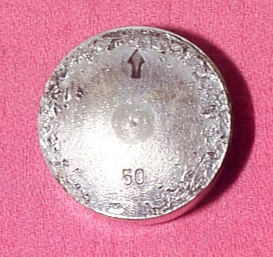
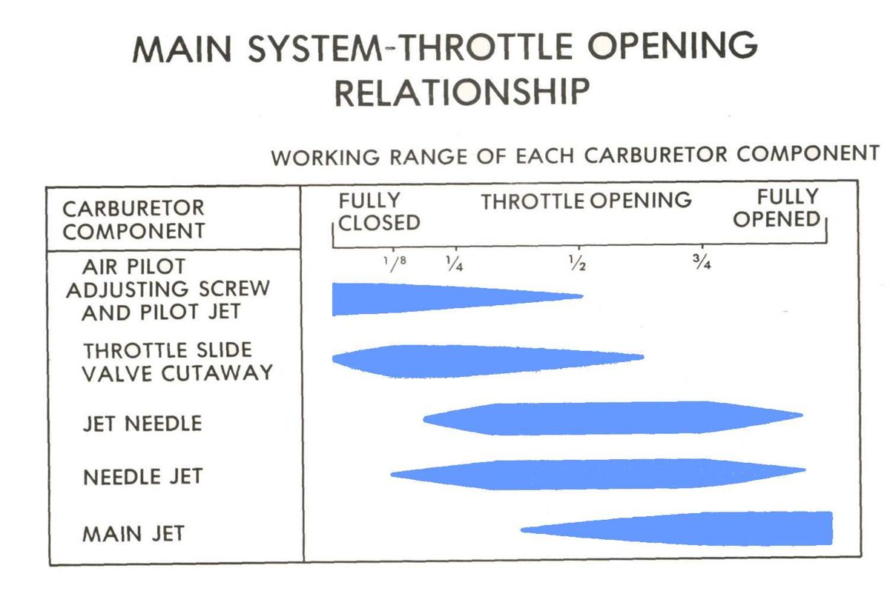
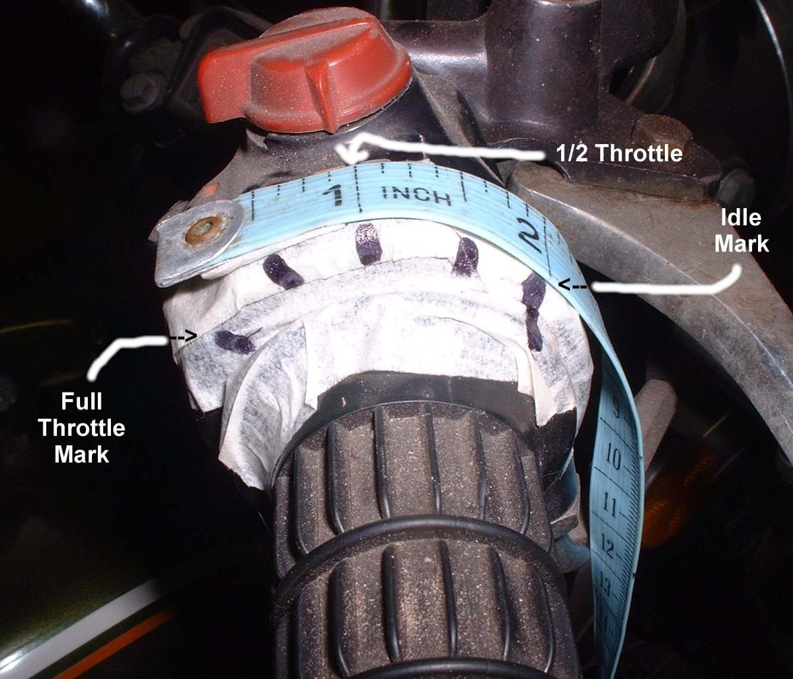

A lean mixture has too much air for the fuel. It burns slowly and hot. Signs: the engine runs hotter than usual, the exhaust pops when you close the throttle, the idle is high or hunts, the engine hesitates, and under load you may hear pinking (a light metallic rattle). The spark plug insulator looks white or pale. Lean running is the cause of many burnt valves and holed or seized pistons, especially on two-strokes.
Is it safe to ride?
With care, gently and for short distances only. Avoid full throttle and long climbs. Two-strokes, and any engine that pinks under light load: do not ride until fixed, as the piston can seize and lock the rear wheel.
Quick checks first
- Has the air filter, exhaust or carburettor jetting been changed recently?
- Is the intake rubber cracked or a vacuum pipe off?
- Is fuel flow good, or worse on a low tank?
- Is the exhaust leaking at the head joint (black soot, ticking)?
- Fuel-injected: is the warning light on?
- Does it get better with the choke on? A lean engine often does. Other signs are a whitish or burnt-looking plug, engine speed that rises and falls, poor acceleration and overheating.
Diagnose it step by step
1Read the spark plug after a short run. Is the insulator white, chalky or blistered?
- Yes: lean or overheating confirmed. See Spark plug is white or blistered and Read a spark plug. Go to step 2.
- Normal tan or grey: the popping may be an exhaust leak. Go to step 3.
2Does the idle change when you spray water on the intake joints and vacuum pipes?
- Yes: air leak. Find an intake air leak.
- No: go to step 3.
3Is the exhaust leaking at the cylinder head or a joint?
- Yes: outside air is pulled into the pipe and burns with unburnt fuel, so it pops on the overrun. On injected bikes it also fools the oxygen sensor. Find and fix an exhaust leak.
- No: go to step 4.
4Is fuel flow restricted? (Better with the fuel cap open, worse on a low tank, weak flow from the tap.)
- Yes: Check the tank vent, the tap and lines and the fuel filter.
- No: carburettor bikes go to step 5; fuel-injected go to step 6.
5Carburettor: are the jets clean and the float level correct?
- A low float level and partly blocked jets give a lean mixture. Check the float and clean the carburettor. If the air filter or exhaust has been changed to a freer-flowing type, the carburettor may need different jets; ask a workshop.
6Fuel-injected: is a code stored?
- Yes: Read engine fault codes. K-Light 125 code P0131 means the oxygen sensor has read lean for too long.
- No: a workshop checks fuel pressure and the injector: Check the fuel pump, Check the fuel injector, Check the oxygen sensor.
7. Does it still run hot with a correct mixture? Check cooling and see Air-cooled engine overheats. Pinking with a correct mixture: see Pinging or rattling when accelerating.
Causes, most likely first
| Cause | How to confirm | Fix |
|---|---|---|
| Intake air leak | Water spray changes idle | Intake leak test |
| Exhaust leak (popping) | Soot at joint, ticking | Exhaust leak check |
| Fuel restriction | Weak flow, cap test | Tap and lines |
| Low float or blocked jets | Carburettor inspection | Clean carburettor |
| Free-flow filter or exhaust fitted | Parts changed | Refit standard parts or re-jet |
| Low fuel pressure or blocked injector | Workshop pressure test | Injector check |
| Worn engine, jets too small | Compression has fallen, so carburettor suction is lower; plug reads lean | Read a plug and choose the jet |
| Changed or cracked airbox, hard air tube, filter left off | Ran better with the original parts | Check the mixture after an airbox change, Replace the air tube |